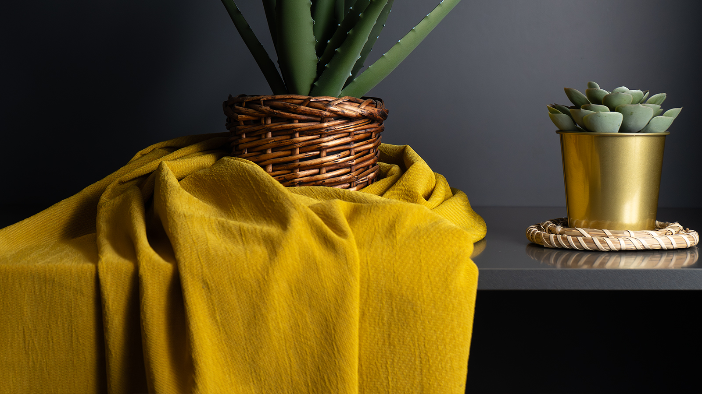
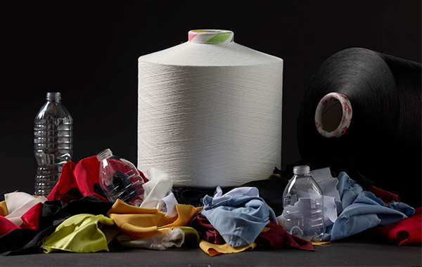
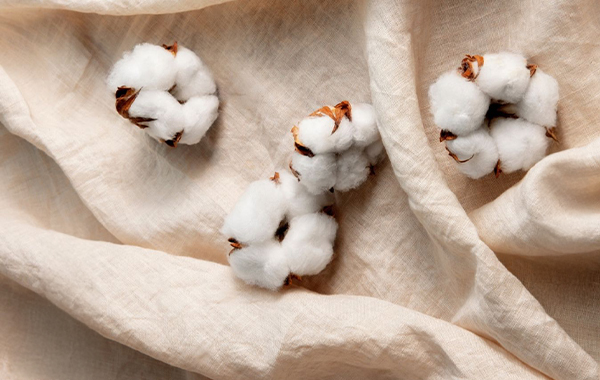
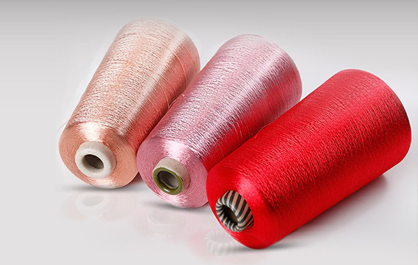
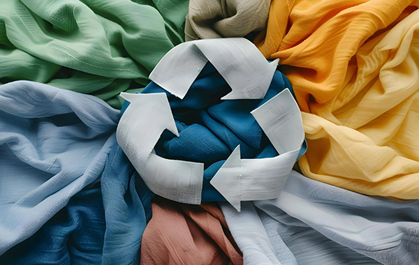
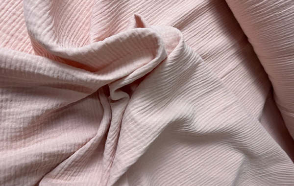
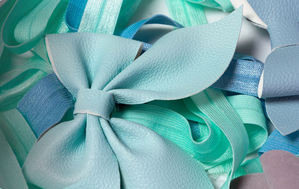
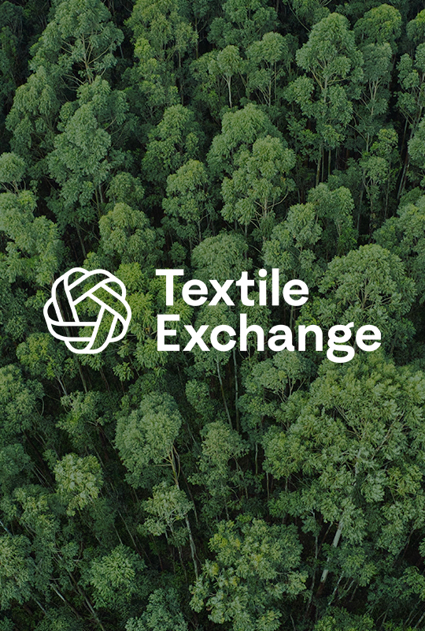

Post-consumer recycled polyester woven fabric. Available in greige, dyed and printed. Full GRS traceability.Tüketici sonrası geri dönüştürülmüş polyester dokuma kumaş. Ham, boyalı ve baskılı mevcuttur. Tam GRS izlenebilirliği.Tela tejida de poliéster reciclado post-consumo. Disponible en crudo, teñido e impreso. Trazabilidad GRS completa.

GOTS v7.0 and OCS 100 certified woven fabric. Greige, dyed and printed. No synthetic pesticides. Full field-to-fabric chain of custody.GOTS v7.0 ve OCS 100 sertifikalı dokuma kumaş. Ham, boyalı ve baskılı. Sentetik pestisit yok. Tam gözetim zinciri.Tela tejida certificada GOTS v7.0 y OCS 100. Cruda, teñida e impresa. Sin pesticidas sintéticos.

5–94% recycled polyester + 6–95% viscose. Superior drape for women's fashion. RCS Blended certified. Dyed and printed.%5–94 geri dönüştürülmüş polyester + %6–95 viskoz. Kadın modası için üstün döküm. RCS Blended sertifikalı.5–94% rPET + 6–95% viscosa. Caída superior para moda femenina. Certificación RCS Blended.

5–94% recycled polyester + 6–95% modal. Soft, breathable hand-feel. RCS Blended. Ideal for premium casual and resort collections.%5–94 geri dönüştürülmüş polyester + %6–95 modal. Yumuşak, nefes alabilen his. RCS Blended.5–94% rPET + 6–95% modal. Sensación suave y transpirable. RCS Blended. Ideal para colecciones resort.

5–94% organic cotton + 6–95% viscose. OCS Blended certified. Natural fluid drape. Rich dyed and printed palette.%5–94 organik pamuk + %6–95 viskoz. OCS Blended sertifikalı. Doğal akıcı döküm. Zengin boyalı ve baskılı palet.5–94% algodón orgánico + 6–95% viscosa. Certificación OCS Blended. Caída fluida y natural.

5–94% rPET + 6–95% standard polyester. RCS Blended. Cost-effective entry point into certified sustainable fabrics.%5–94 rPET + %6–95 standart polyester. RCS Blended. Sertifikalı sürdürülebilir kumaşlara uygun maliyetli giriş.5–94% rPET + 6–95% poliéster estándar. RCS Blended. Punto de entrada rentable a telas certificadas.
When you source from FX Textile, you receive more than fabric — full supply chain documentation, Textile Exchange TE-ID, transaction certificates and scope certificates for every certified order.FX Textile'den tedarik ettiğinizde kumaştan fazlasını alırsınız — tam tedarik zinciri dokümantasyonu, Textile Exchange TE-ID, işlem sertifikaları ve kapsam sertifikaları.Al adquirir de FX Textile recibe más que tela — documentación completa, TE-ID de Textile Exchange y certificados de transacción para cada pedido certificado.
GRS, GOTS, OCS or RCS logos on your product require valid transaction certificates from your supplier for every shipment. We make this seamless.Ürününüzdeki GRS, GOTS, OCS veya RCS logoları, her sevkiyat için tedarikçinizden geçerli işlem sertifikaları gerektirir. Bu süreci sorunsuz hale getiriyoruz.Los logotipos en su producto requieren certificados de transacción válidos de su proveedor para cada envío.
View CertificationsSertifikaları GörVer Certificaciones
| ProductÜrünProducto | CompositionKompozisyonComposición | Standard | AvailabilityMevcutDisponibilidad |
|---|---|---|---|
| Recycled PolyesterGeri Dön. PolyesterPoliéster Reciclado | 100% rPET (RM0189) | GRS, RCS 100 | Greige / Dyed / Printed |
| Organic CottonOrganik PamukAlgodón Orgánico | 100% Organic Cotton (RM0104) | GOTS, OCS 100 | Greige / Dyed / Printed |
| rPET + Viscose | 5–94% rPET + 6–95% Viscose | RCS Blended | Dyed / Printed |
| rPET + Modal | 5–94% rPET + 6–95% Modal | RCS Blended | Dyed |
| Organic Cotton + ViscoseOrg. Pamuk + ViskozAlgodón Org. + Viscosa | 5–94% Org. Cotton + 6–95% Viscose | OCS Blended | Dyed / Printed |
| rPET + Polyester | 5–94% rPET + 6–95% PES | RCS Blended | Dyed / Printed |